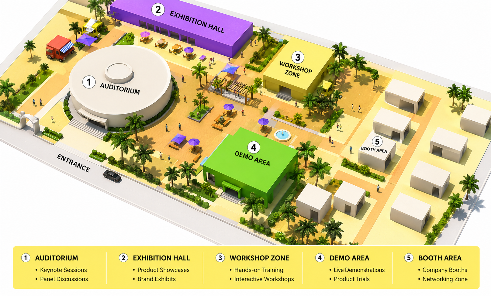
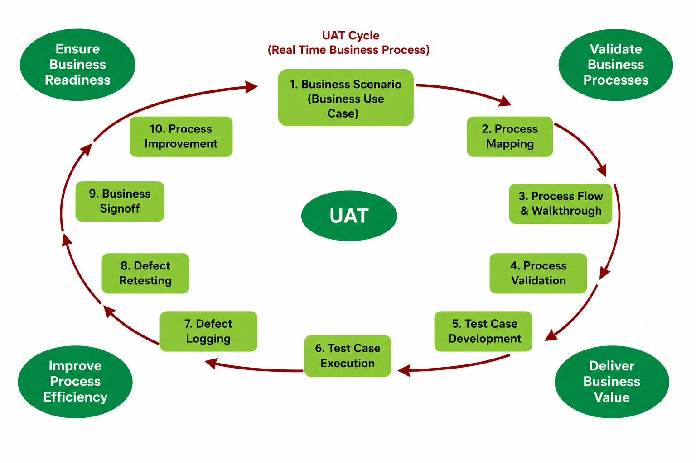

Rural Transformation Centres
A collection point for raw materials supplied by the farmers, also offering agriculture extension services, warehousing, banking and cold storage facilities.

An Agropark is a systems innovation of metropolitan agro production, processing and logistics. As part of an Intelligent Agro-logistic Network, it enables a demand driven combination and integration of various agricultural activities.

The Agropark will be part of Intelligent Agro-logistics Network (IAN), consisting of Agro-park with Rural Transformation Centres, Export Oriented Centres and Domestic Tariff Area (DTA). The Rural Transformation Centres would be a collection point for raw materials supplied by the farmers and would also offer agriculture extension services to the farmers, warehousing, banking, cold storage facilities etc.
The products from Rural Transformation Centres would go to the Agropark for further processing. The Agropark would be made up of cluster of units such as production unit, processing plants, research & development, trade and social activities. For performing all the above functions a high-tech, state of the art infrastructure is being developed. The products from the Agropark will go to the customers and retail outlets.
An Agropark with components of production, processing, trade, demonstration, R&D, capacity building and social functions, delivers its products throughout the whole year as efficient as possible, independent of season and land.
A collection point for raw materials supplied by the farmers, also offering agriculture extension services, warehousing, banking and cold storage facilities.
Part of the Intelligent Agro-logistics Network alongside the Agropark and the Domestic Tariff Area.
Designated for initiatives focused on the domestic Indian market, with better supply-chain linkages for ancillary units.